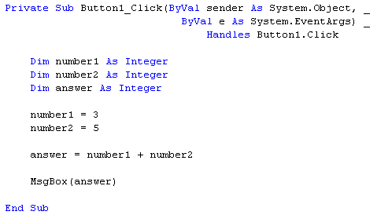
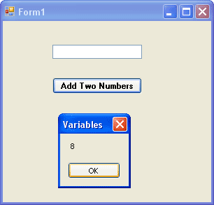
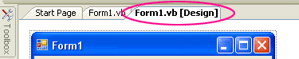
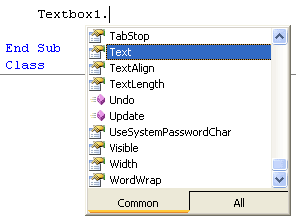
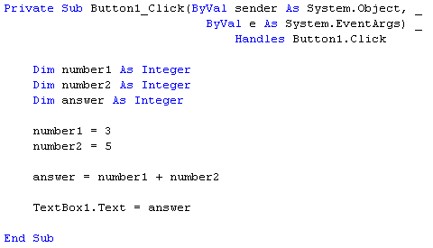

Writing your first .NET code
The Text Property of a Control
In the previous section, you just designed a form and had your first look at the code window. We'll add some code right now.
Click your mouse on the blank line after Private Sub Button1_Click, etc, but before End Sub. Type the following code:
Dim number1 As Integer
Dim number2 As Integer
Dim answer As Integer
number1 = 3
number2 = 5
answer = number1 + number2
MsgBox answer
After typing all that, your code window should now look like this in version 2010 of Visual Studio Express. The only difference in version 2012 is the missing keyword ByVal:

Before we explore what's happening here, save your work and then click Debug > Start from the Visual Basic Menu, or press F5 on your keyboard. This will launch your programme. Click the Button once, and you should get the following:

Stop your programming, and return to the Design Environment. If you can't see your code, you can click the Tabs at the top of the Window, as in the image below:

Click the "Form1.vb [Design]" tab to see your Form.
OK, what happened there? Well, what happened is we've just wrote a programme to add two numbers together, and we displayed the result by using a Message Box - you very first real programme! But let's break that code down a little more.
- First, we started with the Dim word, indicating to Visual Basic that we wanted to set up a variable
- Then we gave the variable a name (number1)
- Next, we "told" VB that what is going inside the variable is a number (As Integer)
- Two more variable were set up in the same way, number2 and answer
After setting up the three variables, here's what we did:
- Told Visual Basic that what is going into the first variable was the number 3, and what is going into the second variable was the number 5. To put something into a variable, you use the equals ( = ) sign. But it's not really an equals sign - it's an assignment operator. You are assigning the value of 3 to the variable called number1
number1 = 3
number2 = 5
The next part is a little bit more complicated, but not too complicated. What we wanted to do was to add two numbers together. So we said
number1 + number2
Visual Basic already knows how to add up: all we need to do is "tell"
it to add up. We do the "telling" in the traditional, mathematical
way - with the plus sign (+). What Visual Basic will do is to look at what we've
stored inside number1, and look at what's inside number2. It's sees the 3, sees
the five, and also sees the plus sign. Then Visual basic adds them up for you.
So, the whole line
answer = number1 + number2
means: "Add the variable called number1 to the variable called number2. Then store the result in the variable called answer."
Think of it as working from the right-hand side of the equals sign first. Then when you have the answer, assign it the variable on the left of the equals sign.
The final part of the programme used Visual Basic's in-built Message Box. We'll learn a more about the Message Box later. For now, think of it as a handy way to display results.
Message boxes are quite handy when you want to display the result of some code. But we have a textbox on the form, and we might as well use that.
So delete the line: MsgBox answer. Type the word Textbox1, then type a full stop. You should see a drop-down box appear. This is a list of the Properties and Methods that the Textbox can use.

Scroll down until you see the word "Text". Double click the Text property and the drop-down box will disappear. (This drop-down box is known as IntelliSense, and is very handy. It means you can just select a property or method from the list without having to type anything.)
No more reading these lessons online - get the eBook here!
The Text property you have chosen is the same Text property that you set from the Properties Window earlier. Here, we're setting the property with our code; before, we set it at design time. But the result is the same - the Text property of the textbox will be set to a value of our choosing.
To set a value, type an equals sign, then type a value for the Text property. We want the contents of the variable called answer to appear in the textbox. So the rest of the code is just this:
Textbox1.Text = answer
Your code window should then look like this:

Run your code again, and press the Button on the form. You should see the number 8 appear in the textbox.
OK, time for your first exercises. They're not too painful, and hopefully they'll giver you a better idea of what variables are. And besides, programming is about doing, not talking. So off we go!
Exercise
Delete the values 3 and 5 and replace them with numbers of your own
Exercise
Delete the plus sign in between number1 and number2, and replace them with
each of the following in turn
- (the minus sign)
* (the multiplication sign in VB is the asterisk sign)
/ (the divide sign in VB is the forward slash)
Exercise A
Set up another Integer variable. Give it the name number3. Assign a value of 10 to this new variable. Multiply the value of your new variable by the variable called answer. Display the result in your textbox.
(Another way to assign values to variables is when you first set them up. You can do this:
Dim number3 As Integer = 10
This is exactly the same as saying:
Dim number3 As Integer
number3 = 10
It's up you which method you use. But the objective is the same - to assign a value to a variable.)
In the next part, we'll about a different kind of variable - a string variable.